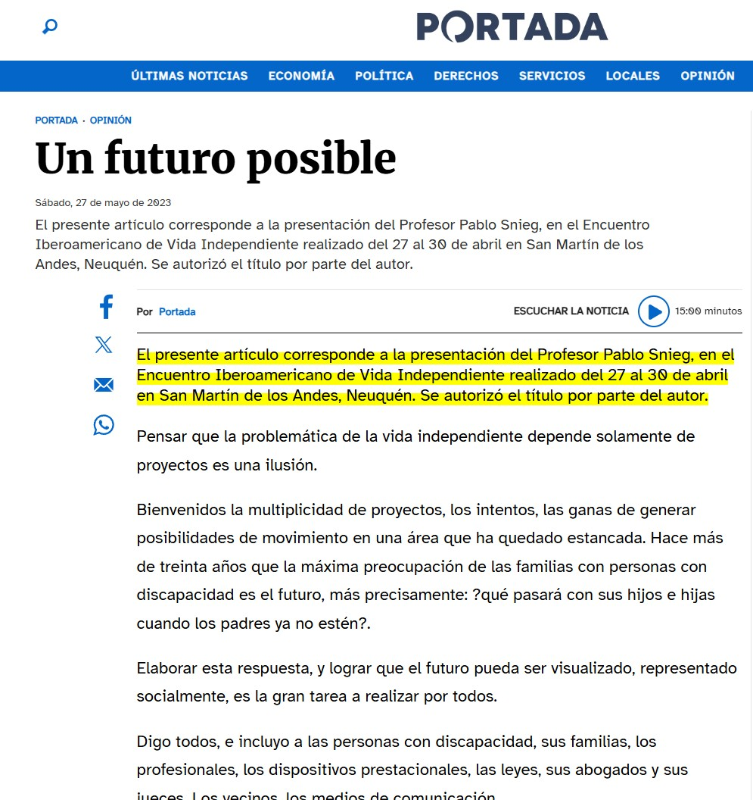

Un futuro posible
El presente artículo corresponde a la presentación del Profesor Pablo Snieg, en el Encuentro Iberoamericano de Vida Independiente realizado del 27 al 30 de abril en San Martín de los Andes, Neuquén. Pensar que la problemática de la vida independiente depende solamente de proyectos es una ilusión.
Bienvenidos a la multiplicidad de proyectos, los intentos, las ganas de generar posibilidades de movimiento en un área que ha quedado estancada. Hace más de treinta años que la máxima preocupación de las familias con personas con discapacidad es el futuro, más precisamente: ¿qué pasará con sus hijos e hijas cuando los padres ya no estén?
Leer artículo completo